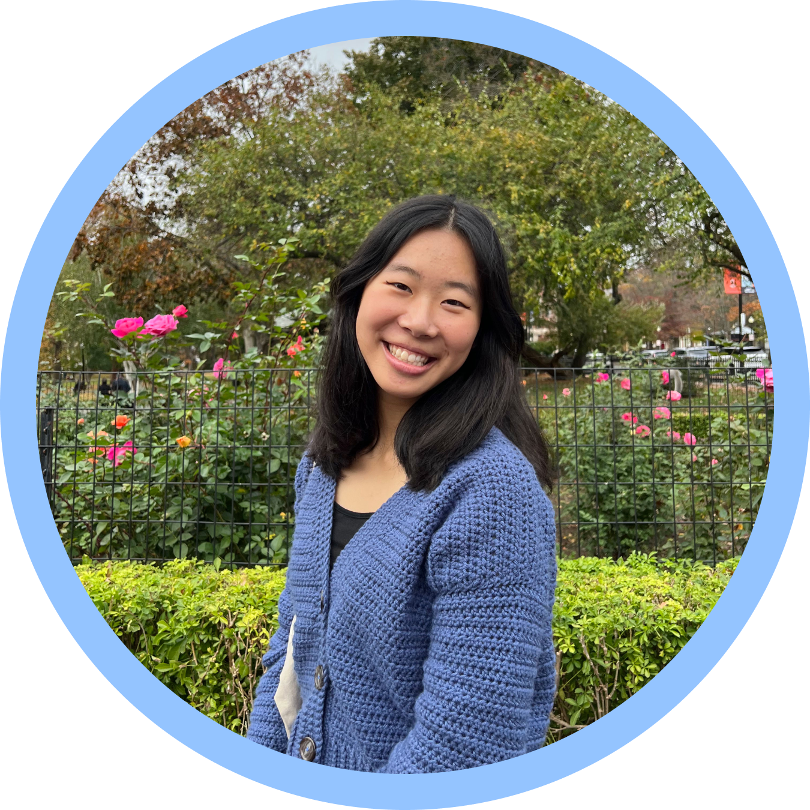

Hi, I’m Adalia!
I study Computer Science and Design at Northeastern University, and I’m a UI/UX Designer.
Outside of design, some of my favorite hobbies are crocheting, painting, going on hikes, runs, and long walks, cooking, baking, reading, and listening to audio books and music.
